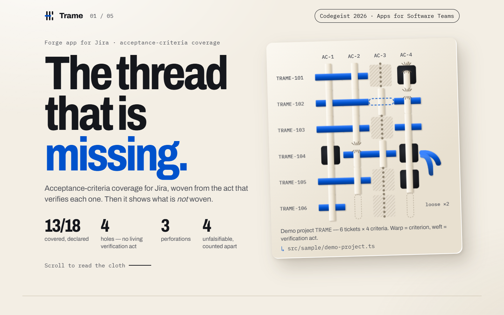
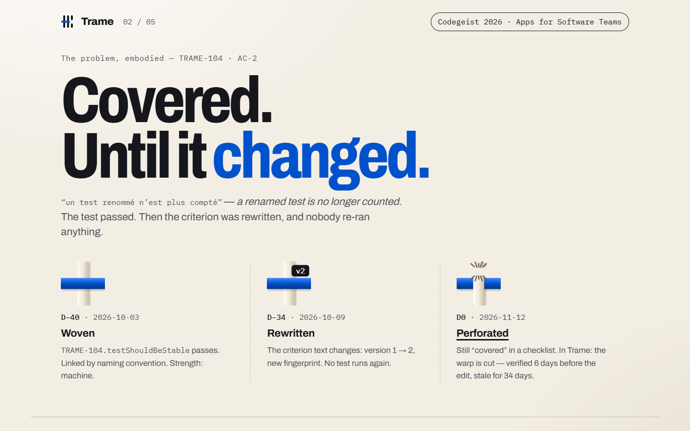
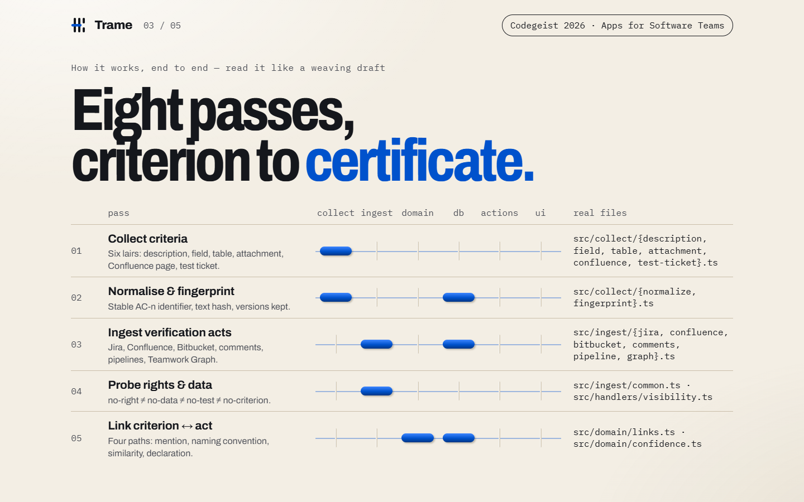
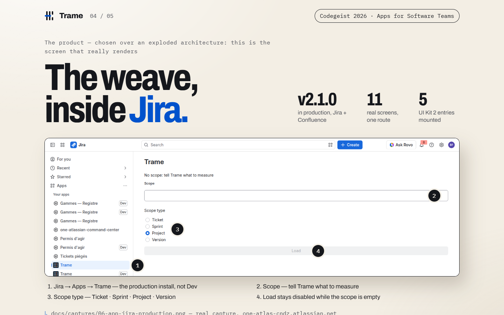
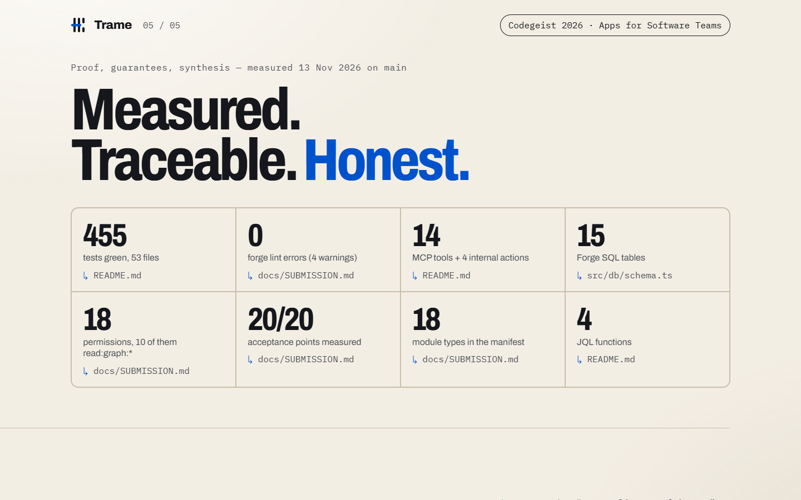

Direction « Relief loom » · 2026-11-16 14:45 · vérification globale : OK · planche-contact.jpg · PLAN.md · REFS.md




04 the weave, inside Jira OK

OK 01-trame.html | 1440x900 | 0 erreur JS | 0 requête externe | marque+slogan(h1)+badge:111 scène:1 | chevauchements:0 | contraste min 5.90:1 (<AA:0) | texte<16px:0 | scroll-x:0 | data-src:7 OK 01-trame.html | 390x844 | 0 erreur JS | 0 requête externe | marque+slogan(h1)+badge:111 scène:1 | chevauchements:0 | contraste min 5.90:1 (<AA:0) | texte<16px:0 | scroll-x:0 | data-src:7 OK 01-trame.html | prefers-reduced-motion | animations en cours:0 | éléments masqués:0 OK 02-probleme.html | 1440x900 | 0 erreur JS | 0 requête externe | marque+slogan(h1)+badge:111 scène:1 | chevauchements:0 | contraste min 5.90:1 (<AA:0) | texte<16px:0 | scroll-x:0 | data-src:2 OK 02-probleme.html | 390x844 | 0 erreur JS | 0 requête externe | marque+slogan(h1)+badge:111 scène:1 | chevauchements:0 | contraste min 5.90:1 (<AA:0) | texte<16px:0 | scroll-x:0 | data-src:2 OK 02-probleme.html | prefers-reduced-motion | animations en cours:0 | éléments masqués:0 OK 03-pipeline.html | 1440x900 | 0 erreur JS | 0 requête externe | marque+slogan(h1)+badge:111 scène:1 | chevauchements:0 | contraste min 5.90:1 (<AA:0) | texte<16px:0 | scroll-x:0 | data-src:1 OK 03-pipeline.html | 390x844 | 0 erreur JS | 0 requête externe | marque+slogan(h1)+badge:111 scène:1 | chevauchements:0 | contraste min 5.90:1 (<AA:0) | texte<16px:0 | scroll-x:0 | data-src:1 OK 03-pipeline.html | prefers-reduced-motion | animations en cours:0 | éléments masqués:0 OK 04-produit.html | 1440x900 | 0 erreur JS | 0 requête externe | marque+slogan(h1)+badge:111 scène:1 | chevauchements:0 | contraste min 5.90:1 (<AA:0) | texte<16px:0 | scroll-x:0 | data-src:5 OK 04-produit.html | 390x844 | 0 erreur JS | 0 requête externe | marque+slogan(h1)+badge:111 scène:1 | chevauchements:0 | contraste min 5.90:1 (<AA:0) | texte<16px:0 | scroll-x:0 | data-src:5 OK 04-produit.html | prefers-reduced-motion | animations en cours:0 | éléments masqués:0 OK 05-preuves.html | 1440x900 | 0 erreur JS | 0 requête externe | marque+slogan(h1)+badge:111 scène:1 | chevauchements:0 | contraste min 5.90:1 (<AA:0) | texte<16px:0 | scroll-x:0 | data-src:13 OK 05-preuves.html | 390x844 | 0 erreur JS | 0 requête externe | marque+slogan(h1)+badge:111 scène:1 | chevauchements:0 | contraste min 5.90:1 (<AA:0) | texte<16px:0 | scroll-x:0 | data-src:13 OK 05-preuves.html | prefers-reduced-motion | animations en cours:0 | éléments masqués:0 OK 03-pipeline.html | étapes .step rendues: 8 (attendu 8) OK P3 | 8 étapes nommées | 27/27 chemins réels présents dans le repo OK chiffre written=24 | docs/CAPTURES.md | extrait trouvé OK chiffre verifiable=18 | docs/CAPTURES.md | extrait trouvé OK chiffre unfalsifiable=4 | docs/CAPTURES.md | extrait trouvé OK chiffre covered=13/18 | docs/CAPTURES.md | extrait trouvé OK chiffre provisional=1 | docs/CAPTURES.md | extrait trouvé OK chiffre holes=4 | docs/captures/04-trame.png | fichier image présent (lu visuellement) OK chiffre perforations=3 | src/sample/demo-project.ts | extrait trouvé OK chiffre tests=455 | README.md | extrait trouvé OK chiffre lint=0 | docs/SUBMISSION.md | extrait trouvé OK chiffre mcp=14 | README.md | extrait trouvé OK chiffre screens=11 | README.md | extrait trouvé OK chiffre tables=15 | src/db/schema.ts | extrait trouvé OK chiffre perms=18 | docs/SUBMISSION.md | extrait trouvé OK chiffre recette=20/20 | docs/SUBMISSION.md | extrait trouvé OK chiffre entries=5 | README.md | extrait trouvé OK chiffre version=v2.1.0 | README.md | extrait trouvé OK chiffre jql=4 | README.md | extrait trouvé OK chiffre modules=18 | docs/SUBMISSION.md | extrait trouvé OK P2 cas | src/sample/demo-project.ts | « editedAgo: 34 » OK P2 cas | src/sample/demo-project.ts | « testShouldBeStable', executedAgo: 40 » OK P2 cas | src/sample/demo-project.ts | « DEMO_NOW = '2026-11-12 »